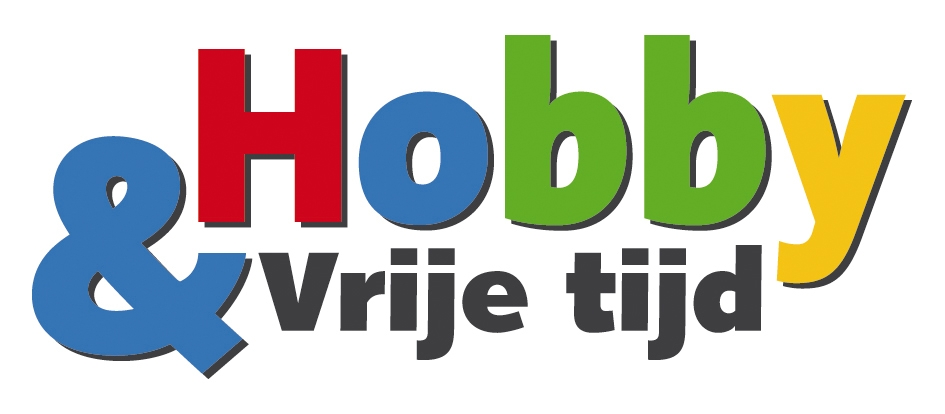
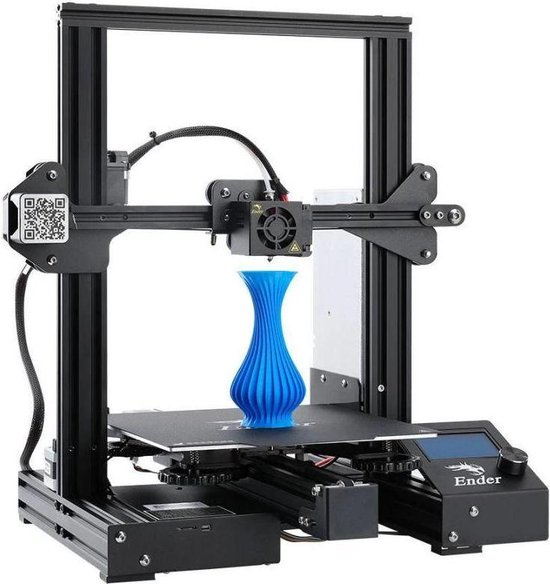
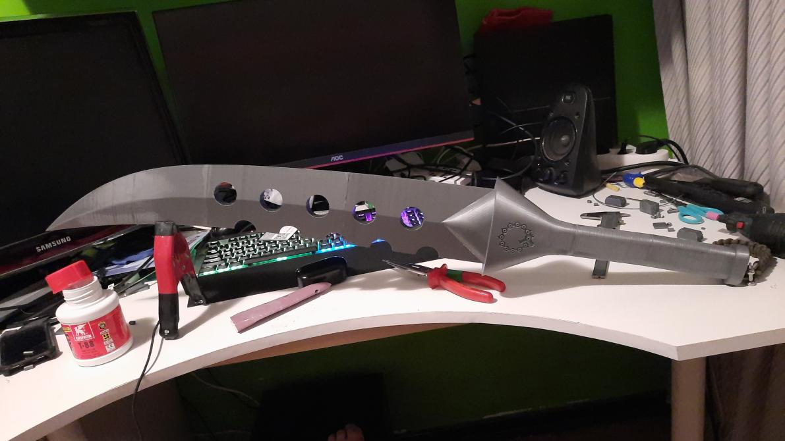
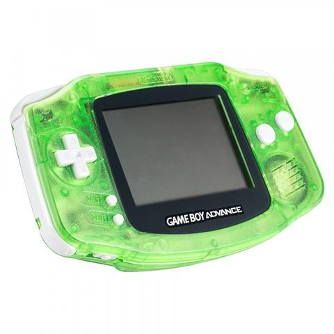
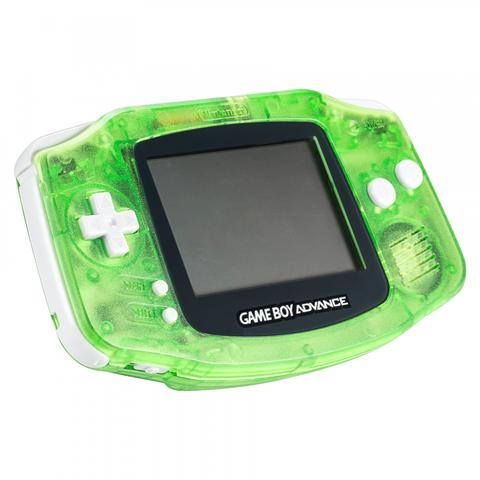

Hobby's |
|
|  |
Mijn hobby's zijn gamen(VR, FPS, MMORPG), aan computer's werken(hardwareen software), met mijn 3d printer allerlei dingen maken en gewoon dingen maken in general. |
Ik speel veel op mijn vr headset, vooral shooters en MMORPG(VR laat mij echt in een wereld komen waar ik echt lol in kan hebben wat je met normaal gamen vaak niet krijgt).
 Dit is mijn 3d printer een Creality ender 3 pro en daarmee heb ik al veel dingen Gemaakt(Bijvoorbeeld het zwaard dat je hierboven ziet)


Met mijn 3d printer maak ik ook custom modellen in tinkercad(zoals een lightsaber voor een vriend van mij)
 

Als laatste, ik ben ook een grote gamer, ik speel veel op pc maar ik heb ook ieder console(xbox one, ps4, xbox 360, ps vita en GBA)
Mijn favoriete games zijn= Borderlands de hele serie(alle games daarvan), oude pokemon spellen(vooral pokemon emerald), rainbow six siege, warframe en new world.